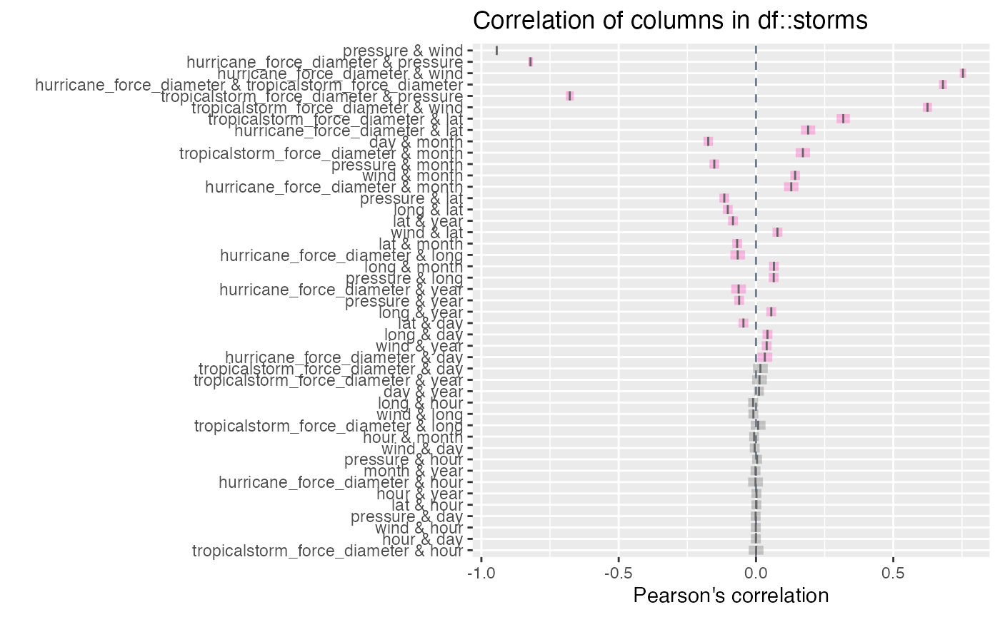
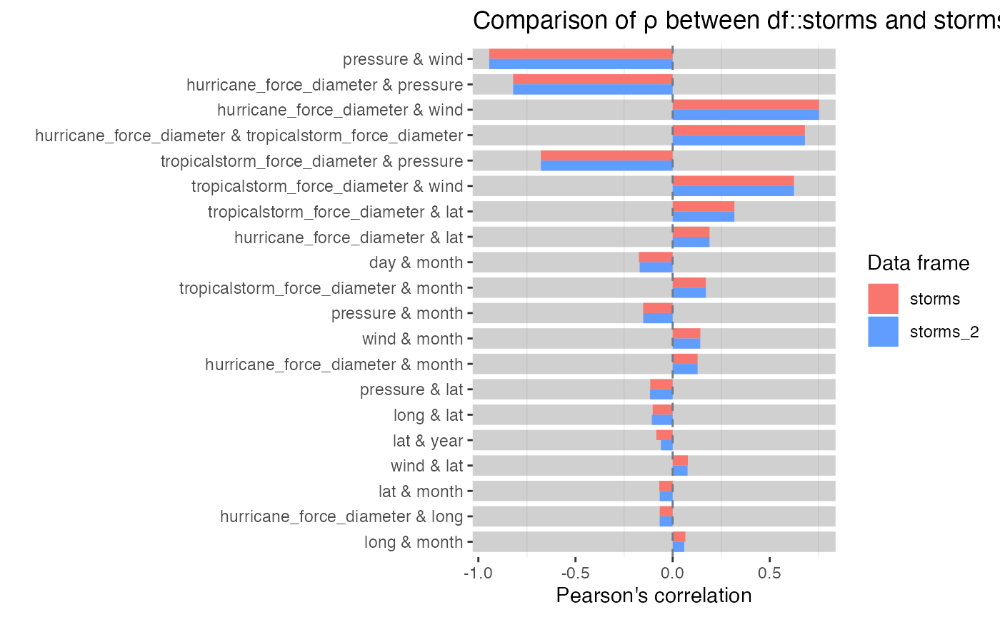

vignettes/pkgdown/inspect_cor_exampes.Rmd
inspect_cor_exampes.Rmdstarwars
The examples below make use of the starwars and storms data from the dplyr package
For illustrating comparisons of dataframes, use the starwars data and produce two new dataframes star_1 and star_2 that randomly sample the rows of the original and drop a couple of columns.
inspect_cor() for a single dataframeinspect_cor() returns a tibble containing Pearson’s correlation coefficient, confidence intervals and \(p\)-values for pairs of numeric columns . The function combines the functionality of cor() and cor.test() in a more convenient wrapper.
library(inspectdf)
inspect_cor(storms)## # A tibble: 45 x 7
## col_1 col_2 corr p_value lower upper pcnt_nna
## <chr> <chr> <dbl> <dbl> <dbl> <dbl> <dbl>
## 1 pressure wind -0.942 0. -0.944 -0.940 100
## 2 hu_diameter pressure -0.842 0. -0.852 -0.832 34.8
## 3 hu_diameter wind 0.774 0. 0.760 0.787 34.8
## 4 hu_diameter ts_diameter 0.684 0. 0.666 0.701 34.8
## 5 ts_diameter pressure -0.683 0. -0.701 -0.665 34.8
## 6 ts_diameter wind 0.640 0. 0.620 0.659 34.8
## 7 ts_diameter lat 0.301 2.50e-70 0.270 0.330 34.8
## 8 day month -0.183 6.47e-75 -0.202 -0.164 100
## 9 hu_diameter lat 0.164 3.08e-22 0.132 0.197 34.8
## 10 ts_diameter month 0.139 2.34e-16 0.106 0.172 34.8
## # … with 35 more rowsA plot showing point estimate and confidence intervals is printed when using the show_plot() function. Note that intervals that straddle the null value of 0 are shown in gray:
inspect_cor(storms) %>% show_plot()
Notes:
inspect_cor drops missing values prior to calculation of each correlation coefficient.p_value is associated with the null hypothesis \(H_0: \rho = 0\).inspect_cor() for two dataframesWhen a second dataframe is provided, inspect_cor() returns a tibble that compares correlation coefficients of the first dataframe to those in the second. The p_value column contains a measure of evidence for whether the two correlation coefficients are equal or not.
inspect_cor(storms, storms[-c(1:200), ])## # A tibble: 45 x 5
## col_1 col_2 corr_1 corr_2 p_value
## <chr> <chr> <dbl> <dbl> <dbl>
## 1 pressure wind -0.942 -0.942 0.929
## 2 hu_diameter pressure -0.842 -0.842 1
## 3 hu_diameter wind 0.774 0.774 1
## 4 hu_diameter ts_diameter 0.684 0.684 1
## 5 ts_diameter pressure -0.683 -0.683 1
## 6 ts_diameter wind 0.640 0.640 1
## 7 ts_diameter lat 0.301 0.301 1
## 8 day month -0.183 -0.178 0.729
## 9 hu_diameter lat 0.164 0.164 1
## 10 ts_diameter month 0.139 0.139 1
## # … with 35 more rowsTo plot the comparison of the top 20 correlation coefficients:
inspect_cor(storms, storms[-c(1:200), ]) %>%
slice(1:20) %>%
show_plot()
Notes:
p_value indicates stronger evidence against the null hypothesis \(H_0: \rho_1 = \rho_2\) and an indication that the true correlation coefficients differ.NA, the comparison is omitted from the visualisation.alpha argument to inspect_cor(). The default is alpha = 0.05.